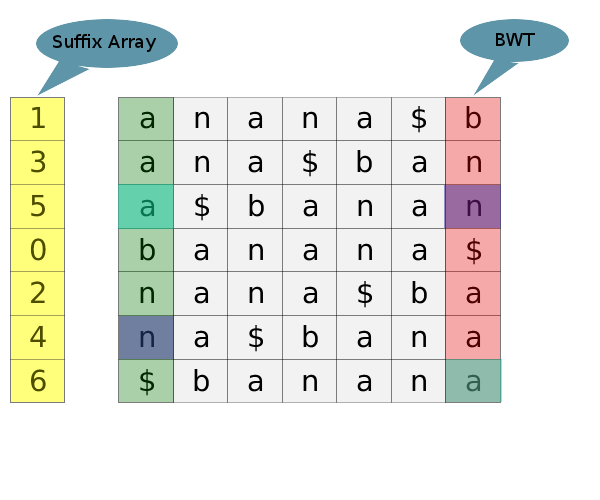

This post is the first of a series where we describe some interesting algorithms used in our product Avadis NGS. We have intentionally kept the usage of bioinformatics jargon minimum to benefit wider audience.
This post describes an elegant and fast algorithm to perform exact string match. Why another string matching algorithm? To answer the question, we need to understand what the problem we are trying to solve is
In short, the problem is to match billions of short strings (about 50-100 characters long) to a text which is 2 billion characters long. The 2 billion character string (referred to as the reference hereafter) is known ahead and is fixed (at least for a species). The shorter strings (called reads hereafter) are generated as a result of an experiment. The problem arises due to the way the sequencing technology works, which in its current form, breaks the DNA into small fragments and 'reads' them. The information about where the fragments came from is lost and hence the need to 'map' them back to the reference sequence
We need an algorithm that allows repeatedly searching on a text as fast as possible. We are allowed to perform some preprocessing on the text once if that will help us achieve this goal. BWT search is one such algorithm. It requires a one-time preprocessing of the reference to build an index, after which the query time is of the order of the length of the query. (instead of the reference)
Burrows Wheeler transform is a reversible string transformation that has been widely used in data compression. However the application of BWT to perform string matching was discovered recently in this paper. This technique is the topic of this post. Before we get to the searching application, a little background how BWT is constructed and some properties of BWT.
BWT for a given text T is constructed as follows:
The image below shows the BWT transform for BANANA$. In practice though, the above algorithm is very inefficient. There are smarter ways to get the BWT, but that is a topic for another post.
BWT has some nice properties which gives it its power:
Our data structure for search has three parts
TODO
TODO